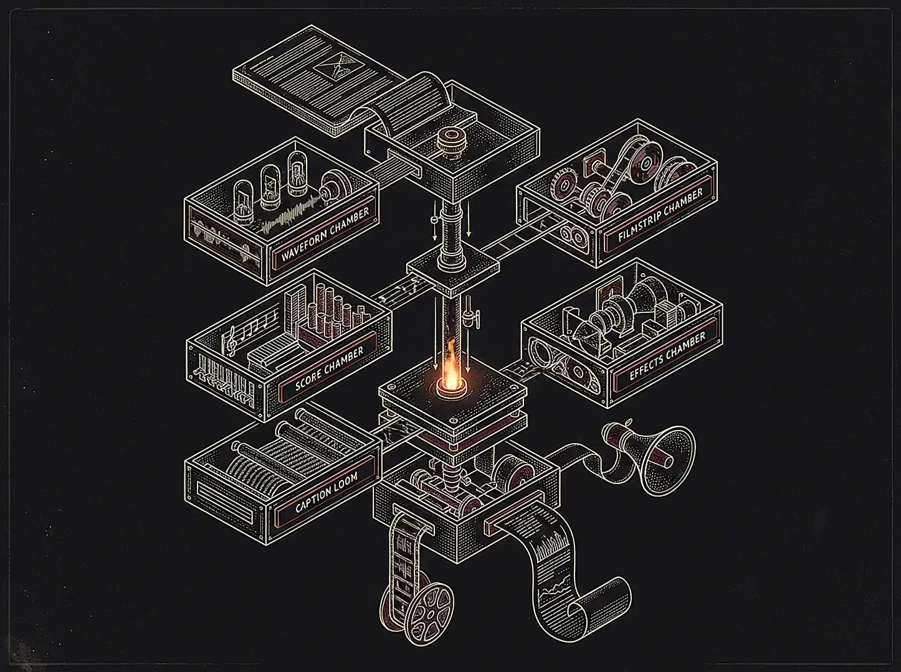
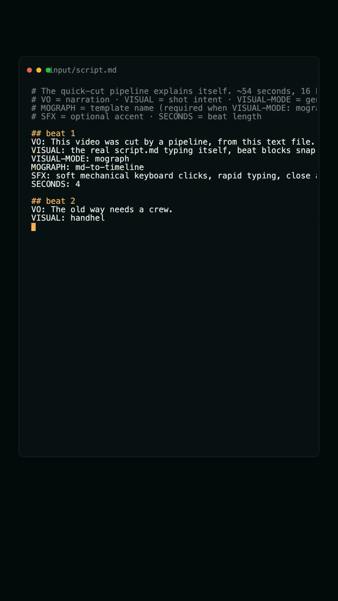
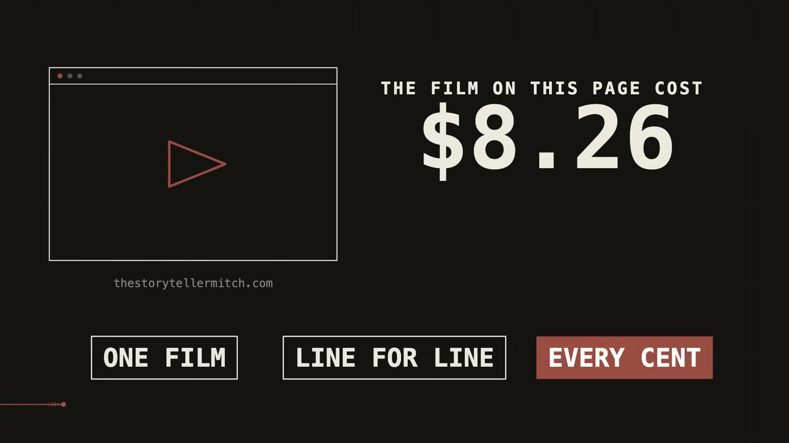

Mitchell Williams · Production AI since 2024
Forward deployed creative.
Comms and content expert: eighteen years of audience engagement across most mainstream digital platforms, from live news and social video to Google's engineering org.
Now building AI production systems: voice, music, video, dubbing, multi-agent editorial, every run logged and costed.
If you're hiring a forward deployed builder, a media expert, or a storyteller, you're in the right place.
Current search
Forward Deployed Creative · Content & Editorial Leadership · Comms Leadership · DevRel & Education
Logistics
18 yrs (10 newsrooms + 8 Google) · Seattle · US citizen, no sponsorship · Remote or relocate

PictureLockrun receipt $8.26
One script in, a produced short out. Every API call logged and costed. See the teardown →

01
AI-Native Production
The current practice: production AI pipelines, with receipts
voice-os
Six-axis voice scoring that gates every draft against a measured corpus. No pass, no publish.
one traced run · 0.610 → 0.740 against the 0.650 gate
the full run, scores visible
content-ops
One story shaped for every surface it lands on, drafts through publish.
one real run · fidelity 0.698, pass · human edit log kept
the run, end to end
systems & checks
The gates this site ships through, and the record of every round.
the ledger is public · every row dated
the standing gates
02
The Broadcast Years
Live broadcast and social video, 2010 to 2018 · the full reel · the impact ledgerThe code matters, and now I write it. My edge is the understanding.
Knowing what an audience needs, hearing a room quickly, and shipping something that fits the way people already work.
The models have gotten good. The taste, the judgment, and the story stayed human. That is the part I have spent my whole career on.
Ten years live
CNN, AJ+, Al Jazeera, HuffPost Live, Fusion. One shot to land a story, no second take. Where I learned to make complex things land under deadline.
the newsroom years, on the timeline →
Eight years scale
Turned dense engineering into training and communication for 1,000+ Principal, Distinguished, and Fellow engineers. Then I stopped writing about the systems and started building them.
the Google years, on the timeline →
Building in production
Production AI agents and AI-native creative pipelines. I sit with the problem, build the workflow, and make the value stick after I leave the room.
what I'm building now, on the timeline →